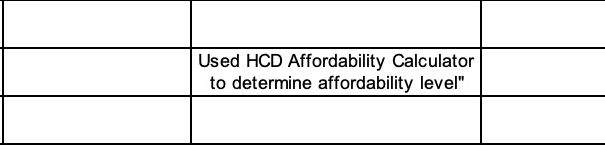

How to clean California HCD's Annual Progress Report (APR) data
In 2017, Governor Jerry Brown signed SB 35 and AB 879, requiring local governments to collect and submit data on housing development approvals in Annual Progress Reports to the state’s Department of Housing and Community Development. This data is remarkably granular, reporting a variety of features on a per-project basis. Prior to HCD’s publication of the APR data, there was no publicly available repository of such data for the whole state. One would have had to slog through inconsistent databases maintained by local governments to get even half of this data.
The APR tables are a landmark achievement for a state regulatory agency, but as I began to work with it, I began to hear anecdotally from other researchers that the data was unreliable, with some opting to use private data brokers instead. I soon learned why.
Another researcher suggested that I calculate construction rates for each jurisdiction, net of demolitions, because new housing developments may include demolitions of existing residences, especially for single-family homes. This seemed simple enough, but once I did so I found some jurisdictions inexplicably reporting large negative numbers. Upon closer inspection, some demolition counts on specific rows included numbers like “2018” or “2024,” which is to say, years reported in the wrong column. This finding sent me down the deep rabbit hole from which this project emerged.
To make a long story short, the reason for these data quality issues boils down to specific ways that Microsoft Excel spreadsheets are converted to comma-separated values (the CSV format). The public Table A2 CSV contains quote and escape-character errors that can disrupt parsing or put values in the wrong columns. I identified quote and escape-character problems in specific records in the public CSV and requested the corresponding original Annual Progress Report submissions from HCD’s APR team. They are included as .xlsm workbooks, used in the code to repair damaged records and get more reliable counts of housing construction in each local jurisdiction. Read on for the long story.
While what follows is a fairly dry technical memo, we should always keep the human stakes for this work in mind. As of my writing this, California has the highest share of its homeless population living unsheltered of any state (63.5% in January 2025, from HUD’s 2025 Annual Homelessness Assessment Report). The state’s housing shortage has been a source of national embarrassment and international mockery for many years. New housing construction, particularly in urban cores that reduce transportation costs and greenhouse gas emissions, will make the difference for many households between living with or without a roof over their head.
The state’s regulatory agencies are going to great lengths to enforce new policies and analyze their effects, so it is critically important that they are not flying blind with unreliable data. I believe we can fix this, and that doing so will matter.
APR rows report homes at three stages: entitlement approval, building-permit issuance and completion. I refer to these as phases below. One row can report homes at more than one phase, so adding phase counts does not give a count of distinct homes. I started out with a method advised by HCD’s APR team, which is just matching phase dates to the reporting year, so I can count housing activity in the year it occurred. However, relying on this method alone leaves out a considerable portion of valid data and introduces data quality issues by shifting some numbers into the wrong columns.
Last verified snapshot: November 19, 2026 · This is a work in progress; I cannot guarantee accuracy of any output.
1. Cleaning steps
First, run python3 data-cleanup/tablea2_parsefilter_repair.py from the repository. The script reads tablea2.csv from the repository root, looks for original APR workbooks in data-cleanup/, and then writes the cleaned CSV and diagnostic files to the repository root.
The script repairs CSV quoting errors, puts back records that the export swallowed into other rows, rebuilds rows that were split or shifted, recovers incomplete records from original APR workbooks, checks phase dates and reporting years, and removes duplicate rows. It then writes the cleaned data and diagnostic files. Every row it rebuilds, and every column it could not rebuild, is listed in a diagnostic file.
(665 with lost columns)
for workbook recovery
and none within it?
Key includes tracking ID, housing type and tenure.
Record repairs happen before the data frame is built, so workbook recovery, validation and duplicate removal all see the rebuilt rows. Workbook repairs rejoin the working data, with their phase dates, before validation. After validation and APR deduplication, the script compares the date-excluded rows with the final retained rows. It separately classifies the original truncated lines against those retained records. The comparison writes a diagnostic; it does not restore excluded rows.
2. Methodology
Naturally, the popular Large Language Models Opus 5 and GLM 5.3 were tremendously helpful in unpacking the structure of the Excel workbooks and writing code around that structure. Because GLM 5.3 did most of the heavy lifting and is the lower-effort model of the two, I am optimistic that this sort of data troubleshooting will not be especially compute-intensive in the future.
3. CSV quoting and escape characters
The name of the CSV format stands for "comma-separated values" which is self-explanatory. The standard CSV convention for preserving commas within a field (in other words, avoiding the separation that would otherwise occur) is to enclose the entry in double quotes, like this: "1234 Main St, City, CA". The commas remain within the address field.
Without those double quotes, each comma moves the following characters to a new column, resulting in 1234 Main St | City | CA. A double quote inside a quoted CSV field is represented by two consecutive double quotes.
Other formats use different escaping rules. JavaScript Object Notation (JSON) encloses strings in double quotes, so it uses \" to represent a quote inside the string. MySQL string literals can also use backslash escapes, unless NO_BACKSLASH_ESCAPES is enabled. A backslash does not replace the opening quote in either case.
In the public APR export, backslashes and double quotes occur in inconsistent sequences, including \" and longer runs of both characters. These sequences suggest repeated and/or inconsistent escaping. The CSV alone leaves the cause and location in the export pipeline uncertain, but the repair script handles the specific patterns found in this file.

Quoting references: CSV conventions (RFC 4180) · JSON strings (RFC 8259) · MySQL string literals.
The script recognizes specific corrupted quote openers and closers before it parses the CSV. It records which physical lines received a closer repair so they can be inspected later. Three patterns are rewritten as text:
- Openers. A comma followed by a quote, two backslashes and two quotes becomes a cell that holds one quote mark (135 openers).
- Closers. Three quote marks after the jurisdiction name at the start of a line are removed (89 closers). Each such line is a record the export cut short: 80 continue through the tenure column and stop there, and 9 hold only the jurisdiction name.
- Host endings. When the line before a closer ends a field with two backslashes and two quotes, that ending becomes three quotes, so the line closes its own field instead of swallowing the next line (72 repairs).
quote = chr(34)
backslash = chr(92)
opener = "," + quote + backslash + backslash + quote + quote
closer_pattern = re.compile(r"^([A-Z][A-Z ]*?)" + quote * 3 + r"([,\n\r])")
host_token = re.compile(re.escape(backslash * 2 + quote * 2) + r"(?=[,\r\n]|$)")
lines = raw_text.splitlines(keepends=True)The script leaves the opening-quote pattern unchanged when a space follows it.
if line_no < len(lines) and closer_pattern.match(lines[line_no]):
hosts = list(host_token.finditer(repaired))
if hosts:
last = hosts[-1]
repaired = repaired[:last.start()] + quote * 3 + repaired[last.end():]
host_closer_repairs += 1
repaired, n_close = closer_pattern.subn(r"\1\2", repaired)Records swallowed into other rows
A record cut short by the export starts with its jurisdiction name and three quote marks, as in HESPERIA""",San Bernardino,2023,…,SFD,Owner, or holds the name alone, as in OAKLAND""". The line before it often ends a field with \\"", which a CSV reader takes for an escaped quote rather than the end of the field. The reader then treats the next lines as more text in that same field, and the records on those lines never become rows.
Earlier versions of the script repaired only the cut-short line. I measured what that leaves behind by repairing the raw text with the previous version of the script, parsing the result with Python’s csv.reader, and asking which of the 785,799 physical lines that begin with a jurisdiction, a county and a reporting year do not start a parsed record. The answer is 471 lines, across 32 jurisdictions and 37 jurisdiction-years. The same test on the text repaired by the current script finds none.
The 72 host endings each sat in front of a cut-off line (counted by the jurisdiction name at the start of the closer line that follows each repaired line): Campbell 35, Hesperia 32, Oakland 2, Irvine 1, Humboldt County 1 and Sonoma County 1. These cut-off lines are among the incomplete records that workbook recovery repairs.
The 471 hidden record lines under the previous repair, by jurisdiction
Hesperia 190, Campbell 45, Tulare 36, Irvine 30, Redondo Beach 21, San Mateo 21, Bakersfield 20, Shafter 20, La Puente 14, Colton 14, Windsor 13, Los Angeles 10, Santa Fe Springs 9, Santa Paula 4, Tehachapi 4, Danville 3, Saint Helena 2, and one each for Orange County, Humboldt County, Roseville, Culver City, Los Angeles County, Sonoma County, Sacramento County, Barstow, Placer County, Oakland, Winters, San Bernardino County, Lincoln, San Luis Obispo County and Santa Barbara County.
Sonoma County’s memo rows
Sonoma County’s affordability note on 441 rows (222 in 2023, 219 in 2024) is a memo quotation that contains bare commas. Without enclosing quotes each comma starts a new column, so the note splits into four cells and every later cell moves three columns to the right. The export has only 52 columns, so the last three columns of those rows are cut off: density-bonus incentives, whether a density-bonus reduction was received, and notes.
The script recognizes the row by the memo’s opening words and its three tail pieces. It joins the four pieces with the comma the raw line shows, strips the closing quote and moves the other cells back into their columns. It adds no character that the raw file does not show. The three cut-off columns are left blank and are marked as lost in reconstructed_rows_parsefilter_repair.csv. The repaired note reads Applied ABAG methodology from Technical Memo \Using ADUs to Satisfy RHNA\\" of 30% VL,30% Low,30% Mod,10% AM.
Realigning the cells also puts 22 demolition counts back in the demolition column; each is 1, on an ADU. For 11 of those 22 projects the cleaned file holds other Sonoma County rows with the same tracking ID and parcel, and every one of them shows a demolition count of 1. The other 11 have no second row to check against.
before = list(f)
old = {c: f[ix[c]] for c in _SONOMA_MEMO_SOURCE_COLS}
f[ix["NO_FA_DR"]] = ",".join([f[ix["NO_FA_DR"]], f[ix["TERM_AFF_DR"]], f[ix["DEM_DES_UNITS"]],
f[ix["DEM_OR_DES_UNITS"]][:-1]])
for target, source in zip(SONOMA_MEMO_TARGET_COLS, _SONOMA_MEMO_SOURCE_COLS):
f[ix[target]] = old[source]
for c in SONOMA_MEMO_LOST_COLS:
f[ix[c]] = ""
stage.counts["sonoma_memo_rows_realigned"] += 1
stage.note(rec, "sonoma_memo", before, SONOMA_MEMO_LOST_COLS)Over-wide rows, split records and NOTES continuations
Three more patterns come from line breaks and extra commas inside fields.
- Over-wide rows. 118 rows (Redlands 88, Signal Hill 30) have more cells than the header. In every one the extra cells are all
NULL, so the script keeps the first 52 cells and removes a triple quote left at the end of a cell. A wide row whose extra cells hold anything else would be written tooverwide_rows_parsefilter_repair.csvand left out of the data; that file is empty in this snapshot. - Split records. 32 records (Chula Vista 31, Murrieta 1) are split by a line break inside a field. The script joins the pieces only when their cells add up exactly to the header’s width. The 33 continuation lines are absorbed into their parents.
- NOTES continuations. 162 records (Yucaipa 117, Oakland 37, eight others) have a multi-line note whose later lines parse as short separate records. The script folds each such line into the NOTES of the record directly above it, one line break per fold, and strips the closing quote of the last piece. 189 continuation lines are folded this way. Two continuation lines cannot be attached because a cut-off record sits between them and their parent; they are the Oakland lines described in section 8.
Other shifted rows
The Sonoma mechanism appears elsewhere, in two forms.
Cells moved over. A comma in unquoted text moves the following cells. 114 rows in 16 jurisdictions are realigned (Walnut Creek 22, Paradise 17, Oceanside 16, Santa Clara County 16, Santa Clara 13, and 30 others). For each row the script lists every way of merging, splitting or re-merging neighboring cells and accepts a layout only if it is the one layout that passes three checks: housing type and tenure are in their allowed lists, the three date columns hold dates, and the count columns hold whole numbers. Zero rows had more than one passing layout or none. 94 rows needed cells merged, 16 needed a merge with the next cell, and 4 needed one cell split. 110 of them lose their last columns to the shift.
A note split at a comma. 114 more rows (Napa County 89, Danville 19, Marin County 4, Ukiah 2) pass the layout checks, because the affordability-term column accepts text, yet that column holds the second half of a note. In sibling rows of the same jurisdiction and year the term column is blank, a number or N/A, and the demolition count a whole number, never a fragment of text. The script realigns such a row only when joining the two cells with a bare comma (and dropping the stray closing quote) leaves a plausible term and demolition count. The row’s last column, NOTES, is lost. No row was left unresolved.
That makes 228 realigned rows in 20 jurisdictions, 224 of which lose their last column or columns; those columns are blank and listed as lost. Before these repairs, 221 rows of the public CSV carried a date in a count column and 264 a non-integer count. The previous version of the script left 34 rows with a date in a count column and 109 with a non-integer count. The current cleaned file has none of either, and none with a housing type or tenure outside the allowed lists.
def _shifted_row_step(records, stage):
"""A start row whose layout is invalid is realigned only when exactly one candidate is valid."""
if not stage.has_layout:
return
for rec in records:
fields = rec["fields"]
if not stage.is_start(fields) or _trailing_null_run(fields) >= SPLIT_PARENT_MAX_TRAILING_NULL:
continue
if stage.layout_valid(fields):
_text_split_step(rec, stage)
continue
valid = {}
for kind, new, lost in _shift_candidates(fields, stage):
if len(new) == stage.width and stage.layout_valid(new):
valid.setdefault(tuple(new), (kind, lost))
if len(valid) != 1:
stage.counts["shifted_rows_unresolved"] += 1
continue
((new, (kind, lost)),) = valid.items()
rec["fields"] = list(new)
stage.counts[f"shifted_rows_realigned_{kind}"] += 1
stage.note(rec, f"shifted_{kind}", fields, lost)def _text_split_step(rec, stage):
"""A note split at a comma: `NO_FA_DR` and `TERM_AFF_DR` hold two pieces of one text.
Evidence (siblings of the same jurisdiction-year, e.g. NAPA COUNTY, DANVILLE): `TERM_AFF_DR` is
blank, a number or N/A, and `DEM_DES_UNITS` a whole number, never a text fragment. A row whose
`TERM_AFF_DR` holds text is realigned only when joining the two cells with a bare comma (the
second ends in the stray closing quote, which is dropped) leaves a plausible `TERM_AFF_DR` and
`DEM_DES_UNITS`; the last column is then lost. Any other row is left and counted.
"""
f, ix = rec["fields"], stage.ix
text, term = ix["NO_FA_DR"], ix["TERM_AFF_DR"]
if _blank_or_token(f[term], _TERM_NUMBER):
return
new = f[:text] + [f[text] + "," + f[term][:-1]] + f[term + 1:] + [""]
if (f[term].endswith('"') and f[text]
and _blank_or_token(new[term], _TERM_NUMBER)
and _blank_or_token(new[ix["DEM_DES_UNITS"]], _WHOLE_NUMBER)):
rec["fields"] = new
stage.counts["shifted_rows_realigned_merge_text"] += 1
stage.note(rec, "shifted_merge_text", f, stage.header[-1:])
else:
stage.counts["text_split_rows_unresolved"] += 1Text first, whole numbers second
Earlier versions let pandas guess every column’s type. Pandas read N/A as a missing value and wrote counts as decimals. The previous cleaned file therefore held 5,190,675 cells like 2.0 across seven count columns, and only 14 cells that read N/A in any case. The current script reads every column as text. Only a blank cell and the export’s NULL marker are missing. A literal N/A, NA, None or null stays as written: the current cleaned file holds 39,453 cells that read N/A in any case (34,638 of them exactly N/A).
The reporting year and each count column whose values are all whole numbers, with the same text before and after conversion, are then converted to integers (28 columns, none degraded by the workbook step). A column that holds a literal token such as N/A stays text as a whole; the token is never turned into 0. A reporting year that is not a whole number stops the run. The cleaned file has no cell like 2.0. DENSITY_BONUS_TOTAL stays text because 979 of its values are decimals.
df = pd.read_csv(io.StringIO(buf.getvalue()), dtype=str, keep_default_na=False,
na_values=["", NULL_TOKEN], low_memory=False, on_bad_lines="error")
_to_int64_columns(df, header)An APN or tracking ID that reads N/A, NA, None or NULL (compared in any case and ignoring punctuation, so N/A, N-A and n.a. are the same token) is missing information, not an identifier. The text stays in the cleaned file (3,053 tracking IDs and 6,384 APNs read this way), but every comparison of records treats it as blank: workbook lookup, duplicate removal and the phase comparison.
_MISSING_ID_TOKENS = frozenset({"NA", "NONE", "NULL"})
_WEAK_ID_COLS = ("APN", "JURS_TRACKING_ID")
def _is_missing_token(text):
"""True when `text` is a missing-information token (N/A, NA, None, NULL, any case or punctuation)."""
return re.sub(r"[^A-Z0-9]", "", str(text).upper()) in _MISSING_ID_TOKENS
def _norm_id(val):
"""`_norm_str` of an APN / tracking id, with a missing-information token as empty."""
text = _norm_str(val)
return "" if _is_missing_token(text) else textCell-level repairs
The script strips one trailing quote from recognized affordability-note phrases in NO_FA_DR, NOTES and FIN_ASSIST_NAME (65 cells), and clears a lone quote mark in those fields (9 cells). The 135 opener quotes are kept only in NO_FA_DR (15 cells), because the original workbooks show a quote mark there (Colfax 9 of 9, Ceres 6 of 6). In every other column the opener quote is emptied (120 cells, in Redlands, Signal Hill and Livingston rows), because I have no workbook for those jurisdictions that would show a quote mark there.
4. Recovery from original submissions
After closer repair, 89 physical lines still hold fewer cells than the header: 80 hold ten cells (jurisdiction through tenure) and 9 hold only a jurisdiction name. They form 85 groups after combining lines with the same jurisdiction, county, reporting year, parcel number, street address, local tracking ID, housing type and tenure. The script checks each group against the original APR workbook.
For each group of incomplete CSV records, the script finds the jurisdiction’s original APR submission for that reporting year among the .xlsm workbooks provided by HCD’s APR team. It reads the workbook’s Table A2 sheet. Workbook filenames use the jurisdiction name stripped to letters and numbers, followed by the reporting year and .xlsm. The header must contain A2_1_ID and A2_18_Affordable within the first 80 worksheet rows.
The corresponding CSV fields are JURIS_NAME, CNTY_NAME, YEAR, APN, STREET_ADDRESS, JURS_TRACKING_ID, plus housing type and tenure. Values are stripped and uppercased; missing values normalize to empty strings, and a parcel or tracking ID that reads N/A, NA, None or NULL counts as missing. The script first looks for a matching local tracking ID, unless it is missing. If it finds none, it tries the parcel number and address together, then the parcel number alone. It uses the first of these searches that returns workbook rows. For tracking-ID lookups, the script checks the returned ID against the requested ID and records mismatches without updating the CSV.
counted with the unresolved groups
0 integrity errors
map the fields
0 ambiguous groups
try phase-count pairing
Telling several workbook matches apart
When a group matches more than one workbook row, the script keeps only the rows that agree with the incomplete CSV line on parcel, address, housing type and tenure, using each of those the line actually holds. If that leaves nothing, all candidates stay. A group that still has several candidates goes to phase-count pairing.
checks = (("APN", lambda c: c.get("A2_1_Current", "")),
("STREET_ADDRESS", lambda c: c.get("A2_1_Address", "")),
("UNIT_CAT", lambda c: c.get("A2_2_Unit", "")),
("TENURE", lambda c: FORM_TO_CSV_TENURE.get(c.get("A2_3_Tenure", ""), c.get("A2_3_Tenure", ""))))
wanted = [(_norm_key(col, identity.get(col, "")), field) for col, field in checks]
narrowed = [c for c in candidates
if all(not want or _norm_key(col, field(c)) == want for (want, field), (col, _) in zip(wanted, checks))]
return narrowed or candidatesMatching rows by phase counts
The script tries phase-count pairing when several workbook rows have different mapped values or several CSV rows match the same project/year group. Pairing requires the same number of workbook candidates and matching APR rows. Rows with any nonzero phase count take the first unused candidate with exactly matching entitlement, permit and completion counts. Remaining candidates are assigned in order to CSV rows whose three phase counts are all zero. Candidate order can determine the pairing when several rows have the same phase counts. In this snapshot pairing resolves one group and updates two records (the script prints truncated_identities_resolved_paired 1 and truncated_rows_updated_via_pairing 2), and no group is left ambiguous.
if len(xlsm_rows) != len(df_idxs):
return None
phase_cols = [col for _, col in _XLSM_TO_APR_PHASE]
populated, skeletons = [], []
for idx in df_idxs:
(skeletons if all((safe_int(df.at[idx, c]) or 0) == 0 for c in phase_cols)
else populated).append(idx)
used_xlsm, pairs = set(), []If the matching workbook rows would supply identical values, the script uses the earliest worksheet row. When several CSV rows match, it still tries to pair them with the original set of workbook candidates.
Workbook recovery replaces the fields listed in the mapping, including housing and affordability counts, and fills the three phase dates from the workbook. Of the 243 date cells in the 81 recovered rows, 242 were blank; 106 dates were filled and none replaced a different date already in the CSV. Because the recovered rows now carry their dates, the date rule of the next section applies to them, and 19 of the 81 fail it (Campbell 2024: 12, Hesperia 2023: 7). I counted these by applying the script’s date rule (_row_date_phase_status) to the 81 recovered rows before and after their dates are copied: none fails before, 19 fail after. It never rewrites the identity fields (jurisdiction, county, year, parcel, address, tracking ID) of an existing row.
for a2_stage, prefix in (("A2_4", ""), ("A2_7", "BP_"), ("A2_10", "CO_")):
for a2_tier, tier in (("vLow", "VLOW"), ("Low", "LOW"), ("Mod", "MOD")):
mapped[f"{prefix}{tier}_INCOME_DR"] = a2_row.get(f"{a2_stage}_{a2_tier}Deed", "")
mapped[f"{prefix}{tier}_INCOME_NDR"] = a2_row.get(f"{a2_stage}_{a2_tier}None", "")
mapped[f"{prefix}ABOVE_MOD_INCOME"] = a2_row.get(f"{a2_stage}_Above", "")
mapped["JURIS_NAME"] = identity_row.get("JURIS_NAME", "")
mapped["CNTY_NAME"] = identity_row.get("CNTY_NAME", "")
mapped["YEAR"] = identity_row.get("YEAR", "")
return mappedSnapshot outcomes: Of the 85 project/year groups, 79 updated one existing CSV record each and 1 updated two records through phase-count matching, so 81 records were repaired. Five groups were unresolved: each is a line that holds only a jurisdiction name (9 lines), so there is no year or project to look up. There were 0 ambiguous groups, 0 additions, 0 proposed additions held for review, 0 integrity errors and 0 equivalent workbook duplicates collapsed.
The previous version of the script, run on the same file, had no CSV row to update for 35 groups and added them from the workbook, held 12 more additions for review, and left 5 matching or pairing ambiguities and 5 unresolved groups: 22 groups unresolved or ambiguous, and 62 records repaired. Now every group that a workbook matches finds its CSV row.
If a group had no matching CSV row, the script would compare parcel, address and tracking ID from both the incomplete CSV record and the workbook record with CSV rows before and after updates and with all other proposed additions, ignoring case and punctuation, before adding anything. It would hold possible links and records with insufficient identifiers for review rather than add them. No group reached this step in this snapshot.
ambiguous_truncated_repair.csv records the reasons, source physical lines and workbook provenance of any group the script holds back. It is empty in this snapshot. Loaded-record positions identify parsed data records and are distinct from physical source-file lines.
5. Date and reporting-year checks
For each stage that reports homes, the script compares its date with the row’s reporting year.
The script excludes the row when at least one of those dates falls outside the reporting year and none falls within it. If any stage reporting homes has a date in the reporting year, the row passes this date check. Missing dates, or dates from which the script cannot extract a year, establish neither agreement nor disagreement.
To be clear, I think HCD’s initial recommendation to filter by matching phase dates to the reporting year is sound. Cities and counties are not giving us useful information about permitting and construction of new housing if they count a project stuck for several years between entitlement and permitting as a new entitlement during each of those years.
Many jurisdictions’ reports list permits and completions from earlier years again. The pattern is general rather than a feature of any one city: of the 619 distinct jurisdiction names in the public CSV, 365 (59.0%) appear on at least one row of the date/year diagnostic that was excluded for dates, 157 have ten or more and 50 have a hundred or more. The five largest, Los Angeles (2,297), Hemet (1,917), Campbell (1,174), Palm Springs (1,139) and Mariposa County (1,125), hold 28.7% of the excluded rows, so most of the pattern lies outside any one place. Campbell’s 2024 report is one example: 452 rows in the public CSV with jurisdiction CAMPBELL and year 2024, 353 of them in the date/year diagnostic, excluded because the dates of their stages fall between 2014 and 2023.
Counting each home in the year its stage happened keeps the same permit from being counted again in a later year’s report. Section 7 tests this against the retained rows. Of the 30,513 excluded permit and completion events, 22,270 (73.0%) have a matching kept record from the year the stage happened: 14,805 of 20,336 permits and 7,465 of 10,177 completions. The matching ones include 9,795 with one candidate, 12,227 with a shared candidate and 248 with several candidates; they are possible repeats of activity the cleaned data already counts in the right year, not proven duplicates. The other 8,243 are conflicting addresses (1,116), insufficient evidence (101) and no candidate (7,026).
We do not know why the years may not match in a given project submission. I exclude rows whose dated activity does not support assigning the reported homes to the reporting year. Reviewing individual submissions would help establish whether the dates or the reporting year need correction.
It is a good idea to omit inaccurate information; it is better to prevent inaccuracies in the first place if the data is worth collecting. Server-side validation could flag discrepancies between phase dates and the reporting year for follow-up and correction before the data are published.
and none within?
20,336 phase mismatches
- 1 year before
- 10,491
- 2 years before
- 4,828
- 3–9 years before
- 3,683
- 10+ years before
- 76
- After report year
- 1,258
Hemet: 1,915
Palm Springs: 1,097
Brentwood: 1,025
Glendale: 915
10,418 phase mismatches
- 1 year before
- 3,082
- 2 years before
- 2,662
- 3–9 years before
- 3,637
- 10+ years before
- 405
- After report year
- 632
Glendale: 935
Imperial: 558
Contra Costa County: 496
Fullerton: 433
10,177 phase mismatches
- 1 year before
- 6,070
- 2 years before
- 2,119
- 3–9 years before
- 1,360
- 10+ years before
- 5
- After report year
- 623
Mariposa County: 700
Palm Springs: 551
Campbell: 548
Auburn: 398
Phase mismatch counts overlap and describe only the 26,703 date-excluded rows. Rows passing this date check face a separate 2018–2024 reporting-year check, which excludes another 11 rows: the nine one-field lines described in section 8 and the two Oakland continuation lines. Missing or unparseable dates supply neither a match nor a mismatch.
row_year = safe_int(row.get('YEAR'))
if row_year is None:
return (False, False, None)
has_mismatch, has_match, first_label = False, False, None
for date_col, count_col, label in _DATE_CHECK_CONFIG:
count_int = safe_int(row.get(count_col))
if count_int is None or count_int <= 0:
continue
date_year = extract_year_from_date(row.get(date_col))
if date_year is None:
continue
if date_year == row_year:
has_match = True
else:
has_mismatch = True
if first_label is None:
first_label = label
return (has_mismatch, has_match, first_label) should_drop = status_df["has_mismatch"] & ~status_df["has_match"]
df_after_mismatch = df[~should_drop].copy()
df_dropped_mismatch = df[should_drop].copy()
df_dropped_mismatch = df_dropped_mismatch.assign(
mismatch_reason=status_df.loc[should_drop, "first_label"].fillna("")
)| Any mismatch? | Any match? | Date-filter result |
|---|---|---|
| No | No | Keep — no assessable conflict |
| No | Yes | Keep |
| Yes | No | Drop |
| Yes | Yes | Keep — at least one phase matches |
The date parser extracts a year from a leading YYYY-style hyphenated string or a three-part slash string ending in a four-digit year. It does not validate the full calendar date. After date filtering, numeric reporting YEAR must be one of 2018–2024.
6. Removing duplicate rows
APR deduplication uses a different key from workbook recovery: jurisdiction, county, year, parcel, address, project name, homes reported for each of the three phases, demolition count, tracking ID, housing type and tenure. The first copy of a duplicate is kept, and the key’s numeric counts are coerced (missing or invalid values become zero) only inside the key; the rows that are kept keep their original values.
Tracking ID, housing type and tenure are in the key because the data shows they separate permits. On the previous key, two accessory dwelling unit permits on one San Diego lot, PMT-3201619 and PMT-3201620, both for 2 homes issued 2023-11-20, were merged into one row. The raw file has ten rows for 4678 Firestone St (five permits, two reporting years); the previous key kept 2 of them and the current key keeps all 10.
Run on the 759,176 rows that survive validation, the previous key (the same key without tracking ID, housing type and tenure) removes 17,124 rows and the current key removes 6,194. 10,932 rows are removed by the previous key and kept by the current one: they differ from the first row of their previous-key group in tracking ID (7,027), housing type (4,861) or tenure (3,534), counting overlaps, and are separate permits. Riverside County alone accounts for 2,002 of them. The two keys’ removals therefore differ by 10,930, not 10,932: the current key also removes 2 rows that the previous key keeps (17,124 − 6,194 = 10,932 − 2). Both are Fontana rows with a blank tracking ID that come before their identified partner in the file; the previous key keeps the first copy, which is the blank one, while the blank-ID rule below removes it.
A blank tracking ID, or one that reads N/A, NA, None or NULL, is missing information, not a different permit. A row with a missing ID is removed only when every other column equals an identified row’s. Five rows meet that test (Fontana 4, Cudahy 1), so the current key removes 6,189 rows and the blank-ID rule removes 5. After the run, no group of rows differs only by a missing ID against an identified one. A permit entered a second time under a different ID is not detected.
This only avoids double-counting the same phase in the same year. A project that is genuinely entitled, permitted, and completed in the same year (a miracle, perhaps, but one can hope!) would be counted as such.
Rows equal on the whole key are the same permit reported twice, so the counts are unaffected, but the copies can differ in columns outside the key, and the first copy’s values survive. 3,397 removed rows differ from the copy that was kept (155 in an income-tier count; the most frequent differences are the certificate-of-occupancy date, 2,062, and the building-permit date, 1,191). 2,200 of those pairs are Riverside County. Each is listed in dedup_collapsed_pairs_parsefilter_repair.csv, with the five missing-ID copies.
APR_DEDUP_COLS = [
"JURIS_NAME", "CNTY_NAME", "YEAR", "APN", "STREET_ADDRESS", "PROJECT_NAME",
*PHASE_APR_COLS, "DEM_DES_UNITS", "JURS_TRACKING_ID", "UNIT_CAT", "TENURE",
] cols = [c for c in APR_DEDUP_COLS if c in df.columns]
if len(cols) != len(APR_DEDUP_COLS):
return df, 0
n_before = len(df)
key = _dedupe_key_frame(df, cols)
dup = key.duplicated(keep="first").to_numpy()
if pairs_out is not None and dup.any():
pairs_out.extend(_collapsed_pair_records(df, key, cols, np.flatnonzero(dup)))
df = df[~dup]
removed, partner = _blank_id_copies(df, cols)
if pairs_out is not None and removed.any():
pairs_out.extend(_pair_record(df, pos, partner[pos], "blank_id_copy", ["JURS_TRACKING_ID"])
for pos in np.flatnonzero(removed))
df = df[~removed]
return df, n_before - len(df)7. Checking excluded rows for duplicates in the cleaned data
I then compare the date-excluded rows with the rows retained after validation and duplicate removal. For each excluded row, the diagnostic examines entitlement, permit and completion separately, using the homes and date reported for that stage. This comparison records possible repeated activity; it never restores an excluded row.
A candidate must have the same jurisdiction, county and parcel, plus a matching tracking ID. If either tracking ID is missing, the street addresses must match instead. A parcel or tracking ID that reads N/A, NA, None or NULL counts as missing. Two present but different tracking IDs rule out a match. A shared tracking ID with different nonempty addresses is recorded as a conflict requiring review.
The same phase must report the same positive whole number of homes and the same full calendar date. The retained row’s reporting year must equal that date’s year and differ from the excluded row’s reporting year. Unlike the date filter, this comparison validates the full date, accepting ISO dates and month/day/year dates. It compares the values available after CSV parsing and repair; it does not recover the original text’s numeric precision.
The diagnostic distinguishes phases with one possible counterpart, several possible counterparts, conflicting addresses, or too little information to compare. It also flags a retained phase that could correspond to the same phase in more than one excluded row. Address conflicts require review even when no eligible counterpart is found or another possible counterpart is available. “No candidate” means the final retained data contains no counterpart under these rules; it does not establish that the activity was never reported.
The comparison covers 26,703 date-excluded rows and 752,982 retained rows, and writes 40,931 phase records.
| Phase | Result | Count | Reported homes |
|---|---|---|---|
| Completion | Multiple candidates | 51 | 51 |
| Completion | One candidate | 2,623 | 4,702 |
| Completion | Conflicting addresses | 340 | 364 |
| Completion | Insufficient evidence | 35 | 35 |
| Completion | No candidate | 2,337 | 3,720 |
| Completion | Shared candidate | 4,791 | 6,975 |
| Entitlement | Multiple candidates | 59 | 165 |
| Entitlement | One candidate | 1,662 | 12,207 |
| Entitlement | Conflicting addresses | 191 | 884 |
| Entitlement | Insufficient evidence | 18 | 1,086 |
| Entitlement | No candidate | 6,253 | 34,116 |
| Entitlement | Shared candidate | 2,235 | 9,708 |
| Permit | Multiple candidates | 197 | 198 |
| Permit | One candidate | 7,172 | 14,169 |
| Permit | Conflicting addresses | 776 | 2,672 |
| Permit | Insufficient evidence | 66 | 94 |
| Permit | No candidate | 4,689 | 16,372 |
| Permit | Shared candidate | 7,436 | 12,817 |
The diagnostic retains the candidate row IDs and reporting years, address-conflict row IDs and sharing flags for review. Row IDs are 1-based data-record positions after the header in the date/year diagnostic and cleaned CSV respectively. They are not original source-file line numbers. Rows excluded only for an invalid reporting year are not inputs to this comparison. It searches the final retained rows, so it does not search records already removed by deduplication.
8. Output files
In this snapshot, 785,890 rows enter validation, 759,176 survive it, and deduplication removes 6,194 to produce 752,982 cleaned rows. Rows in each file:
tablea2_cleaned_parsefilter_repair.csv— 752,982matched_truncated_repair.csv— 80unmatched_truncated_repair.csv— 9ambiguous_truncated_repair.csv— 0date_year_mismatch_rows_parsefilter_repair.csv— 26,714 (26,703 date exclusions and 11 invalid years)date_excluded_phase_comparison_parsefilter_repair.csv— 40,931; comparison diagnostic, excluded rows remain excludedreconstructed_rows_parsefilter_repair.csv— 1,101; every row whose columns were rebuilt or lost.columns_rebuiltlists each column whose cell differs before and after the repair step, andcolumns_lostlists the columns that could not be rebuiltoverwide_rows_parsefilter_repair.csv— 0; over-wide rows that could not be trimmeddedup_collapsed_pairs_parsefilter_repair.csv— 3,402; removed rows that differ from the copy kept (3,397 duplicates, 5 missing-ID copies)
Truncated-line classification tries jurisdiction + county + parcel + address, then relaxes to jurisdiction + county + parcel, then jurisdiction + parcel. Because these keys omit reporting year and tracking ID, a “matched” diagnostic can refer to a retained record from another year or with a different tracking ID. It does not treat N/A as missing. Workbook recovery outcomes are counted separately.
What is reconstructed, and what is lost
The repairs write only what the file shows: none adds a character the raw export does not contain. Some data is nonetheless gone, and the cleaned file cannot say so by itself. These are the cases I know.
- Reconstructed from the raw file. 1,101 rows were rebuilt (Sonoma memo 441, NOTES folds 162, opener quotes emptied 120, over-wide rows 118, cells moved over 114, notes split at a comma 114, split records 32).
- Lost columns. 665 rows have blank columns that the export cut off: 441 Sonoma rows lose density-bonus incentives, the density-bonus reduction and notes; 110 shifted rows lose one to six of their last columns; and 114 comma-split rows lose NOTES. A blank in those columns on these rows means lost, not reported empty. The rows are listed with
columns_lostin the reconstructed-rows file. The 22 Sonoma demolition counts are not lost: they were moved back into their column, and 11 of them are confirmed by the same project’s other rows. - Cut-off records. Nine lines hold only a jurisdiction name: Oakland 2, Alameda 2, Campbell 3, Humboldt County 1, Sonoma County 1. Nothing ties them to a project, so no workbook can be searched and they are dropped as invalid years. One of them, raw line 11864 (Oakland), is followed by two lines of text (raw lines 11865 and 11866: “2. Convert existing garage into ADU…” and “3. Demo existing 149 SF deck…”) that appear to be its notes, and the neighboring records are Oakland 2023. Any homes these records reported are missing from the public CSV and from the cleaned file. I cannot tell from the CSV whether each of the other eight lines stands for a project of its own.
- Workbook rows missing from the public CSV. I compared each workbook’s Table A2 rows with the public CSV. A workbook row is judged if it has a tracking ID, parcel or address (N/A and similar tokens count as absent), reports a positive number of homes at some stage, and passes the date rule of section 5 against the reporting year in the workbook’s file name. A judged row is present if a record of the public file, after the structural quote repair of section 3, has the same jurisdiction and year and the same tracking ID, housing type, tenure and address (the same parcel and address when the row has no tracking ID), ignoring case and spaces; each public record accounts for at most one workbook row. 58 judged rows have no such record: Campbell 2024: 44, Colfax 2021: 5, Ceres 2020: 4, Bell 2023: 3, Bell 2019: 1, Hesperia 2022: 1. Running
python3 data-cleanup/workbook_rows_missing.pywrites the list toworkbook_rows_missing_from_public_csv.csvin the repository root, copying each row from its workbook as it is. In Campbell’s workbook the missing rows are interleaved within runs of consecutive permit numbers: BLD-2022-1921, 1926, 1928 and 1930 are missing, while 1922–1925, 1927, 1929 and 1931 are present. The comparison below uses the 175 judged rows of the Campbell 2024 workbook, 44 missing and 131 present: 38 of the 44 missing rows have a cell that ends in a double quotation mark, in the row itself or in the worksheet row directly above it; 47 of the 131 present rows do. I have not added these rows back to the cleaned data, and I have sent them to HCD for further review. - Duplicate copies that differ. 3,397 duplicate pairs differ outside the key. The first copy is kept; the other copy’s values are in
dedup_collapsed_pairs_parsefilter_repair.csv. - Left as exported. 536 cells in the cleaned file still hold the two-backslash, two-quote sequence inside text, and 979 decimal values in
DENSITY_BONUS_TOTALstay text.
9. Before and after cleaning
The original date filter method checked the first parseable date in permit, entitlement and completion order against the reporting year, excluding rows with no parseable date. It excluded 10.2045% of parsed rows. The current method described above excludes 3.3978% after repair.
705,813 rows passing date check (89.7955%) · 80,210 date excluded (10.2045%)
759,187 rows passing date check (96.6022%) · 26,703 date excluded (3.3978%)
This comparison includes changes to the date rule and repairs; the difference cannot all be attributed to CSV repair. Repairs can also change parsed record boundaries and totals.
I ran the previous version of the script and the current one on the same tablea2.csv. These are the counts at each step:
| Step | Previous script | Current script |
|---|---|---|
| Rows entering validation | 785,484 | 785,890 |
| Dropped for nonmatching phase dates | 26,559 | 26,703 |
| Dropped for an invalid reporting year | 229 | 11 |
| Removed as duplicates | 17,122 | 6,194 |
| Cleaned rows | 741,574 | 752,982 |
| Records repaired from workbooks | 62 (25 updated, 2 paired, 35 added) | 81 (79 updated, 2 paired, 0 added) |
| Workbook groups unresolved or ambiguous | 22 (of 83) | 5 (of 85) |
| Entitlement homes in the cleaned file | 894,797 | 899,043 |
| Permit homes in the cleaned file | 975,825 | 992,298 |
| Completion homes in the cleaned file | 633,918 | 641,577 |
The cleaned file gains 11,408 rows. Validation takes in 406 more rows than before and drops 74 fewer, and duplicate removal takes out 10,928 fewer, because the previous key merged separate permits. Summed over the cleaned file, the entitlement, permit and completion counts rise by 4,246, 16,473 and 7,659 homes (the sum of the phase columns, not a count of distinct homes).
The same run measures the damage the original date filter method let through. Each row below is a count of rows or cells:
| Defect | Public CSV | Previous cleaned file | Current cleaned file |
|---|---|---|---|
| A date in a count column | 221 | 34 | 0 |
| A non-integer in a count column | 264 | 109 | 0 |
| Housing type or tenure outside the allowed lists | 488 | 141 | 0 |
| A reporting year (2018–2024) in the demolition-count field | 80 | 0 | 0 |
Cells like 2.0 | 0 | 5,190,675 | 0 |
Cells that read exactly N/A | 37,083 | 0 | 34,638 |
| Cells that read N/A in any case | 42,843 | 14 | 39,453 |
Definitions for the table: the count columns are the 24 columns from VLOW_INCOME_DR through NO_OTHER_FORMS_OF_READINESS except the three date columns; a date in a count column is a cell of the form YYYY-MM-DD; a non-integer is a cell that is not blank, not NULL and not a whole number (with or without .0); the allowed housing types and tenures are the script’s own lists (UNIT_CAT_VALUES, TENURE_VALUES); the reporting-year row counts a demolition-count cell equal to 2018 through 2024; the previous cleaned file is the output of the previous script on the same tablea2.csv.
The original date filter method also retained rows with incorrect values in their fields. In the public CSV, 80 rows carry a reporting year in the demolition-count field: Hesperia 33, Campbell 32, Colfax 9 and Ceres 6. For the nine Colfax records, the original APR workbook leaves the field blank, and the completion dates fall in the reporting year. No cleaned row has a year there.
10. Formal verification: checking against HCD's own rules
This section describes automated checking against HCD's own written-down form rules. It is not mathematical proof.
HCD's Excel forms carry built-in data-validation rules: allowed lists (for example, unit category), number ranges, date ranges, and one formula rule for extremely-low-income units. Together these rules describe much of what a valid row looks like, though some are not machine-checkable or not carried into the public CSV. A new script, data-cleanup/template_validator.py, extracts them from the nine original submissions in data-cleanup/ (2019–2024 forms) and checks rows against them.
What I mean by “formal verification”
By formal verification I mean writing rules precisely enough that a computer can check every record against them. The checking is automatic, but a few judgment calls remain and are documented in the code (for example, which of two conflicting rules applies). This project does not do mathematical proofs. What proofs would add is a guarantee that a rule holds for every possible input, not just the rows checked.
A check that should pass, and does
Across the nine forms, 3,469 entered rows carry values in the checked columns (from 13 in one form to 1,727 in another; a row counts if at least one of its cells is non-blank in a column that has an enforced rule), and all of them pass their form's own rules. This is the positive control for the validator.
Two details the forms hide
First, rows past the data area carry different “overflow” rules that must not be applied to real data. Second, some columns accept several picks at once through a small macro in the form that joins them as “DB, INC”. The list grows over time: the 2020 form allows it for the deed restriction type and the financial assistance source; the 2021 and 2022 forms add the density bonus incentives; the forms from 2023 add the streamlining provision. The 2019 form's macro is switched off. A plain list check would wrongly reject these.
A duplicate rule in HCD's form
In the forms from 2021 onward (seven of the nine), the number of other density-bonus incentives column carries two limits on the same cells: 0 to 20, and then 0 to 100. Excel applies the first one, 0 to 20. I confirmed this by asking Excel itself which rule is active on those cells in Campbell's 2024 form. This is harmless for people typing into the form, but a program that reads both rules can pick the wrong one. The first version of my validator did, applying 0 to 100. It now applies the first rule, as Excel does. In the public CSV (tablea2.csv), one row has a value of 21, which Excel's rule would reject. That row is Larkspur, 2024, and it is still in the cleaned file.
What the check finds in the public CSV
I matched 2,733 rows in the original submissions one-to-one with the same projects in the public CSV. The match key is the jurisdiction and reporting year (both taken from the workbook’s file name), the parcel number, the tracking ID and the address. Each key must appear exactly once among the workbook rows and exactly once among the public CSV’s rows for that jurisdiction and year; a blank part of the key is allowed (2,716 of the 2,733 have every part). Whole-number cells in the workbook are written without “.0”, and case and surrounding spaces are ignored. The public CSV is read as plain text with no repair. That shows how HCD's export rewrites the form's values. Tenure R and O become “Renter” and “Owner” in every matched row (390 and 2,343). Dates match exactly, written as YYYY-MM-DD, in 3,367 of 3,369 matched dates; the other two are Ceres rows where the CSV has no entitlement date. Infill Y and N are copied as is (1,088 and 1,628), and a blank becomes “0” (17 of 17). The form's demolition columns (whether units were demolished or destroyed, and whether they were owner- or renter-occupied) are not carried: in all 47 matched rows where the form has an entry, the CSV shows “0”, so the check accepts either “0” or the form's own answers in those columns.
Rows I rebuilt from the original submissions (see Recovery from original submissions) keep the form's actual answers in these two columns, so one row in the current cleaned file (Campbell, 2024: PLN-2024-3) says “Demolished” where the rest say “0”. This mirrors what the data actually contains: the public export shows “0”, and the original submissions show the answers. The validator accepts both: “0” as the export's value and the form's own answers. These two columns describe the demolished units; the count of demolished units is a separate column and is not affected.
The previous cleaned file also had nine Campbell rows from 2024 where a word from the housing-type or tenure lists sat in these columns, a column shift that its repair did not undo. The current cleaned file has none, and neither does the public CSV, so the previous cleaning produced those nine rows, not the export.
I derived this translation by matching rows, not from documentation. HCD publishes a Table A2 data dictionary on data.ca.gov that I have not yet compared with these results.
Each row is checked against the rules of the form for its own reporting year. The repository has forms for 2019 through 2024, so the 84,099 rows from 2018, and 224 rows with a blank or unreadable year, are not checked in the public CSV. In the cleaned file, 83,318 rows from 2018 are not checked, and no row has a blank or unreadable year.
The result for the public CSV is 6,453 rule violations on 2,500 of its 786,023 rows. The two demolition-description columns account for 540 of them, all on rows that also break other rules: 441 are the text “10% AM.”” and 80 of the other 99 look like parcel numbers (six or more digits, hyphens and spaces), pushed into those columns by the quoting damage. Many of the remaining violations are fragments of notes or other cells out of place, not wording that differs from the form: 4,867 of the 6,453 violations, on 973 records, are in records with a double quote, a backslash or a line break in some cell, as described in the CSV quoting section. (Here a record is a row of tablea2.csv as pandas reads it with every column as text: the validator’s report row n is record n − 2, counting from 0 after the header. A quote or backslash occurs in records carrying 4,714 of those violations, on 849 records, and a line break in records carrying 2,611, on 631.) Examples are “30% Low” in the affordability-term column (441) and 2021)" there (89), “30% Mod” in the demolition count (441), and “0” in the density-bonus incentives column (557 of that column’s 769). Other violations are values that differ from the form's wording: “Y”/“N” where the form says “Yes”/“No” for whether a project received a density-bonus reduction (773), “Development Standards” where the form says “Development Standards Modification” (86 cells whose whole value is exactly that text), and “N/A” in the affordability-term column (411 rows, all from Rancho Mirage). I have not established whether the export or the filers introduced these differences. Two dates are implausible: a building permit issued in 2109 and an entitlement in 2819.
What the check finds in the cleaned file
The same check on the cleaned file (752,982 rows) finds 1,702 violations on 1,612 rows. The 540 demolition-description violations of the public CSV are down to none. The remaining violations are: 734 on the density-bonus reduction (“N” 419, “Y” 313, and two text answers), 432 in the affordability term (411 “N/A” cells, which the script keeps as written, and 21 “1,000”), 221 on the density-bonus total, 157 on the density-bonus incentives (mostly “Development Standards” alone, 82), 73 on the financial assistance source, 49 on the streamlining provision, 26 on the deed restriction type and 8 on extremely-low-income units. One row has the value 21 discussed above, and one has an entitlement date of 2819 (San Fernando, 2019); its other phase dates match the reporting year, so it passes the date check. The 2109 permit of the public CSV is gone, because its date excluded the row.
So the cleaned file’s violations are nearly all values that differ from the form's wording, such as short codes, formatted numbers and shortened lists. Not all of them are: 167 of the 1,702 violations, on 133 records, are in records with a double quote, a backslash or a line break in some cell, counted as for the public file (15 violations on 10 records have a quote or backslash, 160 on 127 a line break; ordinary note text often has one), and at least one cell, in the density-bonus reduction column, holds a sentence of notes. A published translation table from HCD, and the original submissions, would settle where the rest come from.
11. Recommendations
Recommendation 1: Standardize validation when reports are completed and submitted
Practically speaking, no state agency can fully guarantee that self-reported data from local jurisdictions is entirely accurate without directly monitoring local reporting operations. HCD acknowledges this limitation on its APR dataset page, stating that the agency “does not independently verify information reported by local jurisdictions in their APR form.”
Data validation can prevent entries that fail a field’s requirements from entering the data pipeline. Those requirements include the type of value, its range and its relationship to other fields. A ZIP code entered as a price and a year entered as a demolition count are both numeric, but neither belongs in that field. Validation reduces data-cleaning overhead and makes later accuracy checks more practical.
Client-side validation checks data at the point of user input. Server-side validation checks submissions when HCD receives them. The first helps local staff correct entries while completing a report; the second applies the same requirements to the submitted file, including files whose local checks have been changed or bypassed.
One example where this could help is the non-deed-restricted, or NDR, category for housing affordable to moderate-income households or below. HCD instructs jurisdictions reporting these homes to explain how affordability was determined in Field 18, “Housing without Financial Assistance or Deed Restrictions.” Its February 2026 APR webinar gives this example:

The example puts square footage, a range of dollar amounts and the method used to establish affordability in the same cell. The webinar identifies four sources for Field 18:
- Listed rent or sales price.
- Estimated rent or sales price reported by the developer.
- Estimated rent or sales price based on listed prices of comparable homes.
- A regional study of affordability by housing type published within the past two years, such as an ADU study.
If none of these sources exists, HCD directs jurisdictions to report the homes as above moderate income.
Checking whether a free-text entry supplies this information requires reading individual project descriptions. For future APR reports, separate numeric fields could collect the price or the lower and upper bounds of a price range, with a selection for monthly rent or sales price. Floor area could have its own field. A drop-down menu could identify the affordability method, accompanied by a source citation and date. HCD could then check whether the required information is present and consistently formatted across jurisdictions.
Standardized entries would also make comparisons with publicly available price data more practical. For example, unusually high or low rent estimates could be flagged for follow-up against comparable homes in the same jurisdiction, accounting for housing type, size and year. Flagged estimates would need review against the cited evidence.
Validation depends on the field: calendar dates, whole numbers of homes, percentages, street addresses and prescribed categories each need different checks. HCD’s Excel forms already include validation and protection controls, but these controls need to be applied consistently across fields and submissions.
If a category of data is worth tracking, it is worth further standardizing the reporting format for it.
Recommendation 2: Use server-side validation to process APR submissions
Validation should continue through the agency’s internal processing and publication of statewide data. The inconsistent escape-character sequences described above can disrupt column parsing even when a submission was valid in its original spreadsheet.
The public CSV alone cannot establish whether an error originated in a local submission or arose while HCD imported, combined or exported the data. Cells containing formulas or fixed labels can be protected from edits, and usually are, but client-side checks can be bypassed. HCD should therefore repeat the validation checks server-side when it receives submissions.
Recommendation 3: Use formal verification to support data validation
The check described above works because HCD's forms already contain rules a computer can read. The next step is to use them everywhere. I recommend four things:
- Write each field's rules once, as a single machine-readable specification that the Excel form, HCD's intake checks and the public export all use.
- Check that specification automatically for conflicts, like the duplicate 0–20 / 0–100 rule.
- Publish the code translation between form values and export values.
- Automatically verify each published release against the specification, including that every value lands in its intended column.
The form's own rule for demolitions only requires a whole number of zero or more, so a year like 2018 passes it. Catching values like that needs rules about how fields relate to each other (for example, demolished units compared with units in the project), which a formal specification can state and a computer can check.
For rules that are pure logic or arithmetic, HCD could also adopt proof tools, which can guarantee a check is correct for every possible input.
A huge thank-you to Farzad Mashhood and the entire APR team at apr@hcd.ca.gov for their advice and for providing the original submissions used in this analysis.